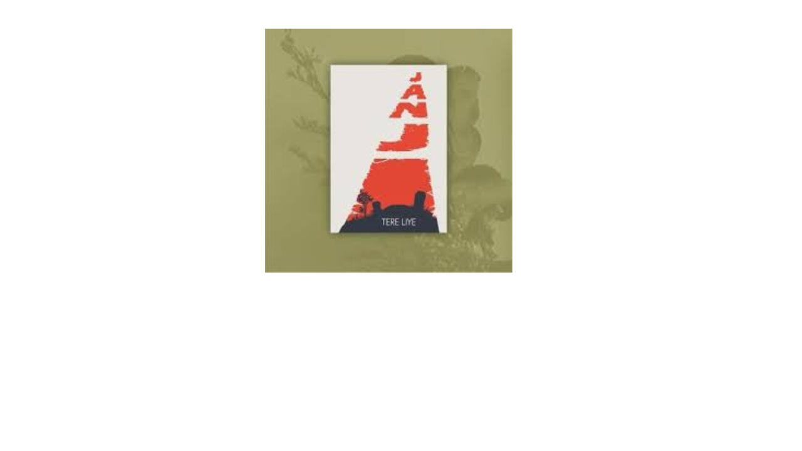
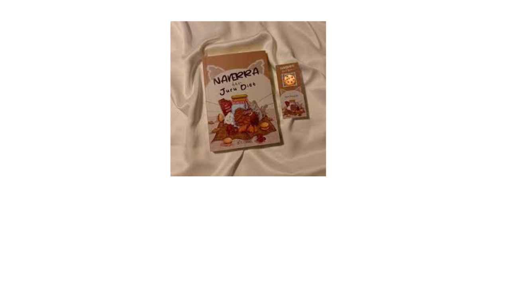
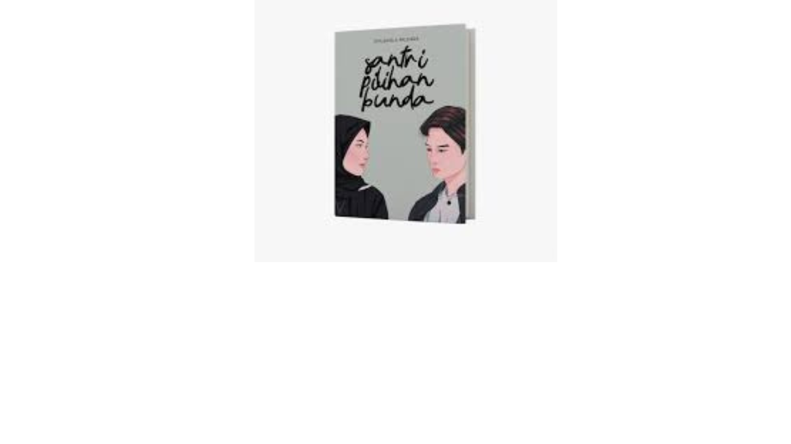
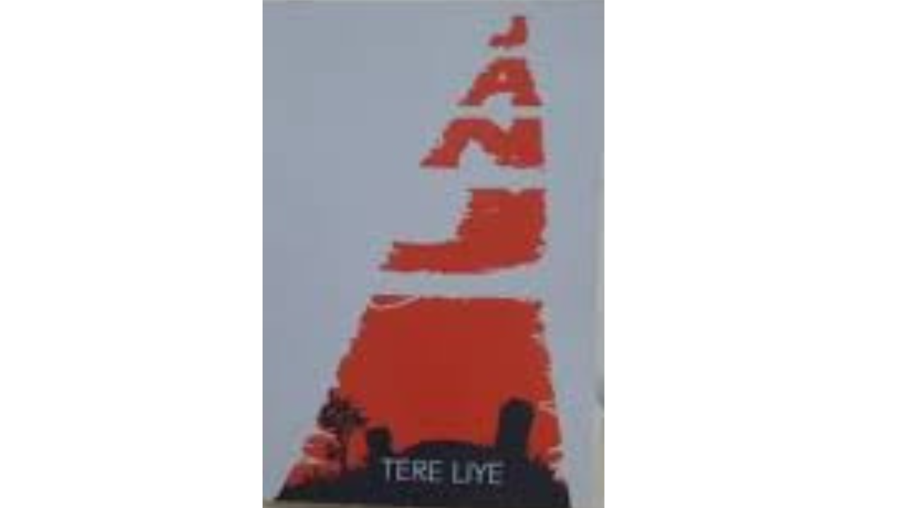
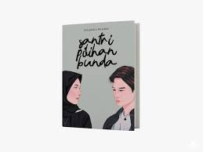

Janji
20 Juli 2021Views : 3,487,497Novel ini mengisahkan perjalanan tiga santri nakal Bahari Hasan Kaharuddin yang diutus oleh gurunya untuk mencari orang bernama Bahal.
read
Naverra dan Juru Diet
22 Agusutus 2021Views : 3,487,497Novel ini mengisahkan perjuangan Naverra dalam menurunkan berat badan dan melawan body shaming dengan bantuan Kaden, seorang mahasiswa gizi yang menyusunkan program diet sehat untuknya.
read
Santri Pilihan Bunda
20 Agustus 2021Views : 3,487,497Novel ini mengisahkan tentang Aliza, gadis remaja modern yang terpaksa menjalani perjodohan dengan seorang santri bernama Kinaan atas keinginan ibunya.
read